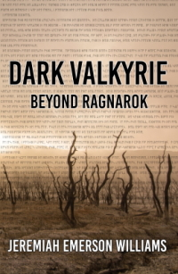

NEW
Section for new releases from each category and/or news
Section for new releases from each category and/or news
Self-Published stories can be found on Amazon
|  |
DARK VALKYRIE: BEYOND RAGNAROK
In a world ravaged by the Twilight of the Gods, Kit is an Outrider who ventures out into the wastes of the New World on behalf of her town. There she takes up her second life as the Dark Valkyrie, a notorious viking hunter.
|
Open Library titles are available to read for free with new stories every month. Stories are grouped by world, and a given world shares a consistent lore and mechancis between stories, even if those stories don't otherwise have overlaps. Click on a banner for futher details.

|
||||||||
|
Photo by Cristofer Jeschke on Unsplash
Elijah Dunham was born in our world, but one day he woke somewhere else entirely with no recollection as to how he got there, only a haunting feeling that he had done something terrible – a wrong only he can right. So burdened was he by this guilt, that his soul was infused with an antithetic æther, that would one day manifest and he would become a Sorcerer of the Dead. Yet this would only be the first of many strange powers and happenings to befall him in this familiar and foreign world. |
||||||||
|
Wizard of West City is largely episodic, though certain tales contain events that forever shape stories thereafter. The stories below are organized into periods punctuated by major stories. Non-major stories within a period can be read in any order.
|
|
Photo by Sebastian Unrau on Unsplash
An old king rises from his grave and conjures unto him an army of the dead that grows ever steadily under the weight
of their conquest across the land, that all may be put to rest, that order may at long last be achieved, that suffering
shall forever end and the world be laid still. |
||
|
There's currently only one finished story in this world, a short story of Greig's service in the Black King's legion.
|

|
||||
|
Photo by Leslie Cross on Unsplash
TEMPORARILY DISCONTINUED |
||||
|
Terrantula is serial and meant to be read in chronological order.
|
I'm an author of fantasy, sci-fi, and horror with the "and" playing an important role as elements of each show up in every story,
be it Sam of Grayhaven's scientific approach to magic, Erebus' encounters with eldritch powers in the far future, or just general
unsettling atmospheres and descriptions. My education in computer science and math, as well as my hobby of gaming, also play into
the way my stories are constructed and presented.
For updates on my work, follow me on Facebook. I also have a Twitter
and Patreon page, which you can use to support my Open Library. I don't update these other social
media pages as regularly due to a lack of following, but I'll be happy to change that, given the incentive.